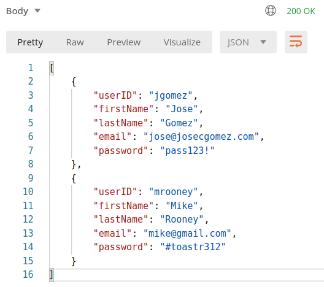
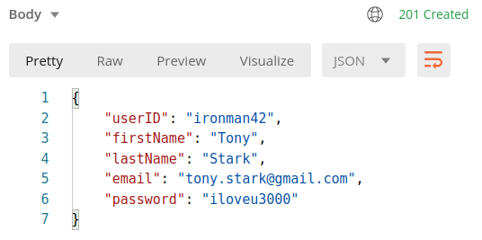
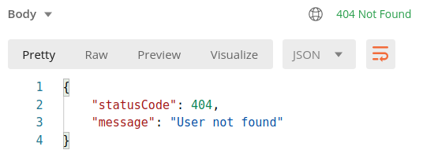
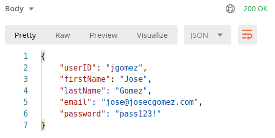
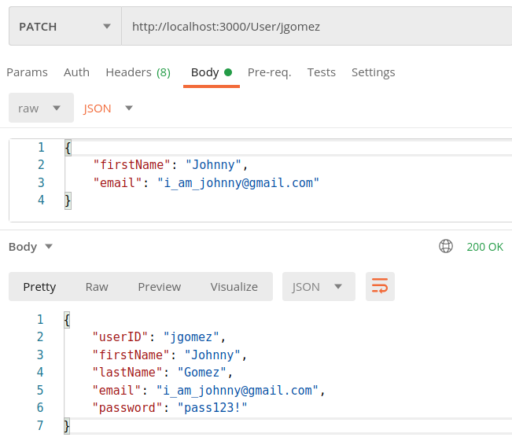
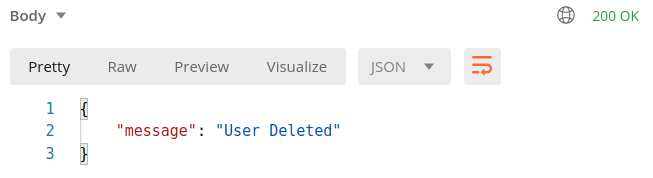

| Method | URL | Description |
|---|---|---|
| GET | / |
This is the default route. the application should respond with a help page in simple HTML that outlines the available functionality. A simple table which outlines each available request, the expected input and output data as well as any expected errors or requirements. |
| GET | /Users |
Should return a list of any user in the database (as a JSON array) with all their properties.  |
| POST | /User |
Creates a new User record and takes in the following properties: UserID, firstName, lastName, email, and password. There should be error checking to ensure that the UserID doesn’t already exist. If it does, an error should be returned. If the user is successfully created, it should return the user entity along with a 201 (Created Status).  |
| GET | /User/{ID} |
Should return a specific User (selected by its userID property provided in the URL) with all its properties if it exists. If the User ID is not found, it should return an error 404 (Not Found) with an appropriate message.   |
| PATCH | /User/{ID} |
Should allow you to Update (change) any data (except the ID) for an existing User. If the User isn’t found, return an error (same as above 404 not found).  |
| DELETE | /User/{ID} |
Should delete a User if it exists. If it doesn’t exist, it should return an Error with a status code 404 (Not found).  |